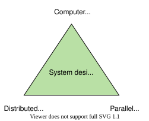
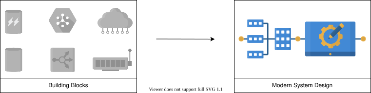

2. Introduction
Introduction to Modern System Design
Introduction to Modern System Design
Get an overview of the topics we’ll cover in this course.
What is system design?#
System design is the process of defining components and their integration, APIs, and data models to build large-scale systems that meet a specified set of functional and non-functional requirements.
System design uses the concepts of computer networking, parallel computing, and distributed systems to craft systems that scale well and are performant. Distributed systems scale well by nature. However, distributed systems are inherently complex. The discipline of system design helps us tame this complexity and get the work done.

System design aims to build systems that are reliable, effective, and maintainable, among other characteristics.
- Reliable systems handle faults, failures, and errors.
- Effective systems meet all user needs and business requirements.
- Maintainable systems are flexible and easy to scale up or down. The ability to add new features also comes under the umbrella of maintainability.
Modern system design using building blocks #
We have separated out commonly-used design elements, such as load balancers, as the basic building blocks for high-level system design. This serves two purposes. First, it allows us to discuss all the building blocks in detail and discuss their interesting mini-design problems. Second, when we tackle a design problem, we can concentrate on problem-specific aspects, mention the building block we’ll use, and how we’ll use it. This helps us remove duplicate discussions of commonly-occurring design elements.
We have identified sixteen building blocks that are crucial in designing modern systems.

About this course #
This course is about designing systems that scale with increasing users, remain available even under different faults, and meet functional goals with good performance. Real-world system building is an iterative process where we start with a reasonably good design, measure how it performs, and improve the design in the next iteration.
The focus of this course is to immerse ourselves into carefully-selected system design endeavors to enable ourselves to tackle any novel design problem, be it in a systems design interview or a task at the office. This course aims to teach concepts instead of giving out boilerplate designs. Some gaps that this course aims to fill are listed below.
A fresh look at system design: Many system design courses provide a formula to attack a specific problem. This might seem attractive in a high-stress situation like an interview, but it might encourage memorizing a design solution instead of actually understanding the problem and devising an appropriate solution. If system design were that formulaic, then we probably wouldn’t need people for system designing. System design is as much an art as it is a science, and attacking a design problem from the first principles gives a fresh feel to it.
Going deep and broad: We tackle some traditional problems, but with added in-depth discussions on them. We give proper rationale for why we use some components despite their tradeoffs. For example, we explain why we use a particular database, a caching system, or a load balancing technique in a design.
We address some new design problems as well that touch upon not only scalability but also availability, maintainability, consistency, and fault-tolerance. Collectively, traditional and new problems cover all aspects of modern system design activity. Our hope is that this course prepares learners to effectively tackle any new design problem they encounter.
Real systems are complex and, often, we might need to make appropriate assumptions to properly scope a problem. We cover problems in more detail to properly grasp the real-world systems.
Iterative process: Systems, in reality, improve over iterations. We often start with something simple, but when bottlenecks arise in one or more of the system’s parts, a new design becomes necessary. In some design problems, we make one design, identify bottlenecks, and improve on it. Working under time constraints might not permit iterations on the design. However, we still recommend two iterations—first, where we do our best to come up with a design (that takes about 80 percent of our time), and a second iteration for improvements. Another choice is to change things as we figure out new insights. Inevitably, we discover new details as we spend more time working with a problem.

Interactive learning: We provide ample opportunities to get experience with system design. Some design problems guide learners through many steps to design a system. We also have a few examples where the learner designs the full system end-to-end without any guided steps. We reinforce the important concepts by testing learners with questions and quizzes.
Who should take this course?#
System design is for any software engineer who wants to advance in their career.
- Software developers: System design is primarily for back-end developers who aim to become principal engineers or solution architects. It’s because these engineers handle actual user data. Once the data is submitted to back-end systems by the frontend, effective handling of data makes the overall application successful. Having said that, full stack or front-end developers may also want to learn system design to improve their work. At the same time, support engineers (also called SREs) who work on-call in the production environment have to deal with all sorts of problems daily. Therefore, system design concepts enable SREs to efficiently find the root causes of complex problems.
- Product/project managers: A big challenge in product/project management is to build systems that scale well and perform effectively over time. Managers that are aware of system design can steer the design of large-scale performant systems. Therefore, it is imperative for product/project managers to understand system design concepts to lead the design and development of successful applications.
- System design learners: System design is an interesting subject, and people in tech domains can greatly benefit from learning system design. This course helps a learner understand how giant tech companies design and build successful applications from scratch and improve them over time. Other learners may want to develop their idea into a large application by learning from this course.
- Interview preparation: Lately, system design is becoming an important part of software development interviews. This course helps software engineers prepare for interviews. We have a short guide on preparation for a system design interview in the appendix section of this course for learners who are interested.
Prerequisites for this course#
We assume that you know the fundamental concepts of a distributed system.
System design borrows many great concepts from distributed systems. We have an excellent course for learners who are interested in revisiting and reviewing their concepts on distributed systems. Apart from distributed systems, some basic concepts on computer networking and operating systems are also helpful before taking this course.
Course Structure for Modern System Design
Course Structure for Modern System Design
Get an overview of the structure and strengths of this system design course.
We'll cover the following
Structure of the course#
This course consists of forty chapters. These chapters can be segmented into four different sections given below.
- Introduction: The introduction section is composed of four chapters. The first chapter introduces the course and its key features. The second chapter talks about different types of abstractions. Next, we discuss some indispensable non-functional characteristics that every large-scale system should have. We wrap this chapter up with back-of-the-envelope calculations that enable us to estimate resources during our design problems.
- Building blocks: The “Building Blocks” chapter starts with an introductory lesson presenting sixteen different building blocks. Each of these building blocks is explained in an independent chapter. We conclude this section with the "Conclusion" chapter, which also serves as an introduction to the next section.
- Design problems: This section is the meat of the course and is carefully crafted from thirteen design problems.
- Epilogue: The “Epilogue” section wraps up this course and is made up of two chapters. The first covers spectacular failures that show how, in the real world, even a small mistake can bring down a large and successful application. Such failures may be inevitable, but we highlight some measures to mitigate such failures. We conclude the course with the concluding remarks chapter.
Note: Although we did our best to keep the chapters independent, our readers will find it useful to read them in the given sequence.
Strengths of the course#
While filling some important gaps in other available courses, we believe this course has some key strengths to offer. We summarize the strengths and the advantages this course has over others in the table given below.
Strengths | Advantage |
Building blocks | This is a modern approach to system design where we construct bigger artifacts using smaller building blocks. |
Building blocks as design problems | We’ll treat each one of our building blocks as a stand-alone, mini design problem. |
Incremental improvement to design | Layer-by-layer design solution addresses added bottlenecks, designing simple and incremental solutions to complex systems. |
Evaluating the design | Accountability of the provided design solution shows the performance of our design. |
Solving the traditional problems with updated designs | This course is up to date with the latest industry demands. |
New design problems added | This course contains updates to decades-old system design courses. |
Careful collection of design problems | Each problem has its unique aspects in terms of problem-solving and designing. |
Contributions by experts from FAANG | Learn from the best. |
Let's start our system design journey!